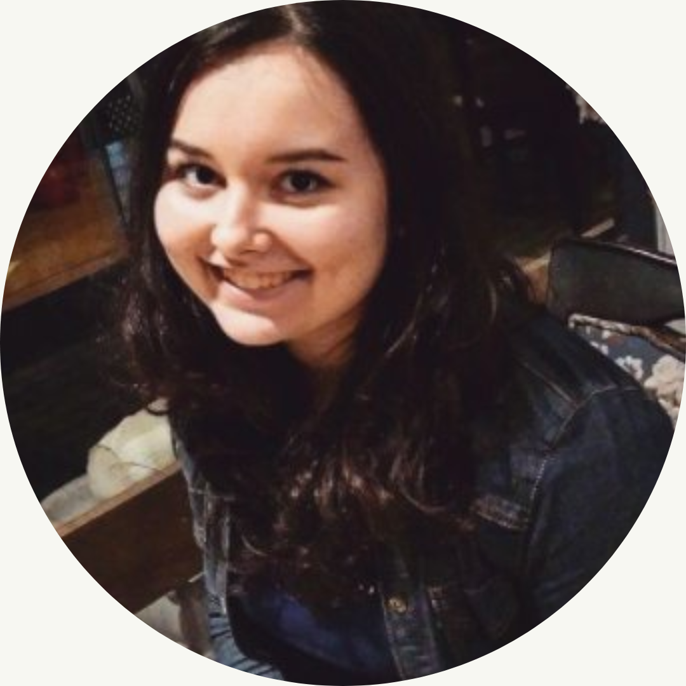

My name is Isabela Nardi da Silva. You can find me cited as:
Da Silva, I. N.; Silva, I. N.; Nardi da Silva, I. N.; Silva, I.; Nardi, I.
Among others... Having two family names can be complicated!
Currently I am a research assistant at DeustoTech, a foundation by the University of Deusto, in Spain.
I am a Ph.D. student at the University of Deusto. You can find information on my academic background here.
I've been researching on remote laboratories and distance learning since 2015. You can find my publications here.
I have experience with research, teaching and programming. You can find information on my professional experience here.
If you want to contact me, click here.